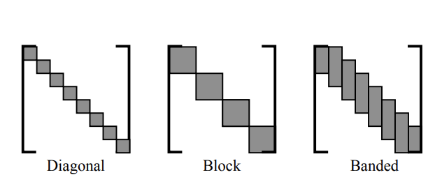
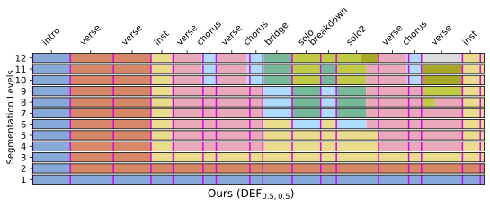
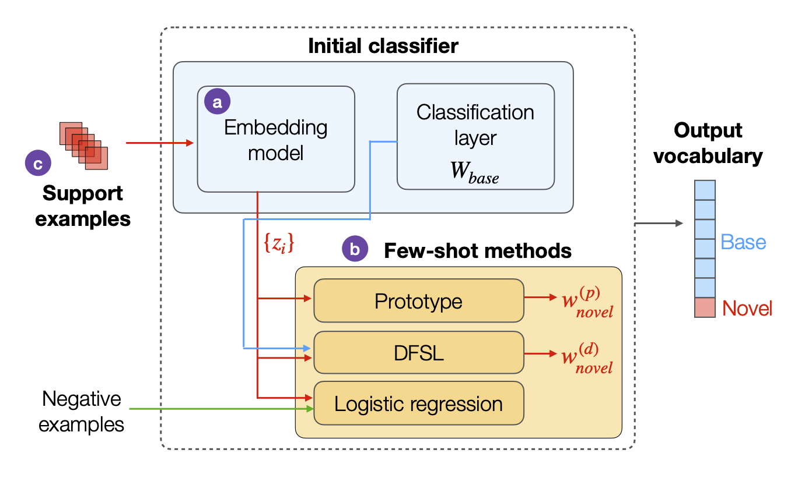

Generative AI for music and audio, focused on controllable, fast models for human–AI co-creation.
About
I am Nicholas J. Bryan (Nick Bryan), Head of Music AI & Firefly Music
and a Principal Scientist at Adobe Research. I lead the team behind Adobe Firefly Generate Music
and the Firefly Music Model. My research spans generative music and audio, controllable music generation, audio machine learning,
and human–AI co-creation.
I received my PhD and MA from CCRMA,
Stanford University and MS in Electrical Eng., also from Stanford. Before that,
I received my Bachelor of Music and BS in Electrical Eng. with summa cum laude,
general honors, and departmental honors at the U. of Miami-FL.
I have received 2 best paper awards, 1 AES Graduate Design Gold award, 1 best reviewer award, and published at top venues including ICLR, ICML, NeurIPS, TMLR, TASLP, and SPS.
I was general co-chair of WASPAA 2023, a 2x elected member of the
IEEE AASP TC, an IEEE Senior Member,
and am an Adobe distinguished inventor. I've also been a musician since childhood, performed at Carnegie Hall,
and have been on the front-page of the New York Times.
News
[09/2026] "V2M-Zero: Zero-Pair Time-Aligned Video-to-Music Generation" NeurIPS 2026! arXiv [09/2026] "TAC: Timestamped Audio Captioning" NeurIPS 2026! arXiv [05/2026] Invited Talk at Conversational AI Reading Group at Mila The Grand Design Challenge of Music GenAI [05/2026] "Rethinking Music Captioning with Music Metadata LLMs" ICASSP 2026 arXiv [05/2026] "A Generative-First Neural Audio Autoencoder" ICASSP 2026 arXiv [05/2026] "Stemphonic: All-at-once Flexible Multi-stem Music Generation" ICASSP 2026 arXiv [04/2026] Invited Talk Design@Large UCSD w/Orly Lobel and Shahrokh Yadegari, EventBrite Link! [10/2025] Adobe Firefly Generate Music Released! about the Firefly Music Model, web [10/2025] TMLR journal paper! DRAGON: Distributional Rewards Optimize Diffusion Generative Models arXiv, web, video [04/2025] "Beyond Text to Music" Keynote Talk at ICASSP 2025 GenDA Workshop. slides
Adobe Internships
For current students, I offer research internships at Adobe Research in San Francisco, CA.
Internships are typically during the summer months and for graduate students studying audio/music
signal processing, machine learning, or related field. If you are interested, please send me an
email with your CV and research interests in October-December before the given summer. My Adobe
webpage is here.
J. CasebeerN. J. Bryan,
P. Smaragdis IEEE Transactions on Audio, Speech, and Language Processsing (TASLP),
January, 2022. Presented at IEEE International Conf. on Acoustics, Speech, and Signal Processing
(ICASSP),
June, 2023.
(TASLP,
arXiv,
web,
code,
video)
"Style Transfer of Audio Effects with Differentiable
Signal Processing."
C. J. Steinmetz,
N. J. Bryan,
J. D. Reiss,
Journal of the Audio Engineering Society (JAES),
September, 2022.
Presented at 154th AES Europe Convention,
May, 2023.
(arXiv,
code,
demo)

"Meta-learning for Adaptive Filters with Higher-order
Frequency Dependencies."
"Emotion Embedding Spaces for Matching Music to
Stories."
M. Won,
J. SalamonN. J. Bryan,
G. J. Mysore,
X. Serra International Society for Music Information Retrieval Conference (ISMIR),
2021.
(code,
paper)
ISMIR Best
Student Paper Award Winner

"Deep Embeddings and Section Fusion Improve Music
Segmentation."
J. SalamonO. Nieto,
N. J. Bryan,
International Society for Music Information Retrieval Conference (ISMIR),
2021.
(code,
paper)

"Who Calls the Shots? Rethinking Few-Shot Learning for
Audio."